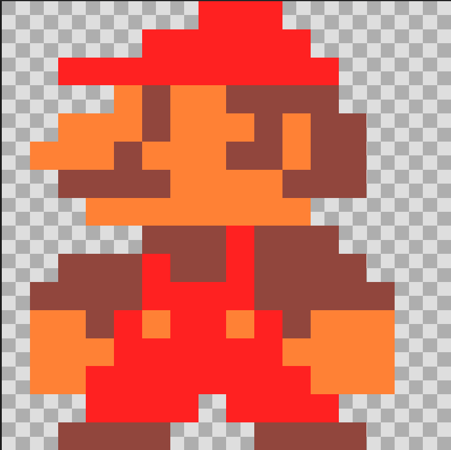
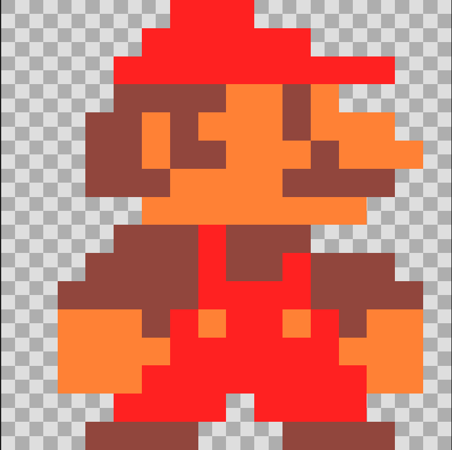
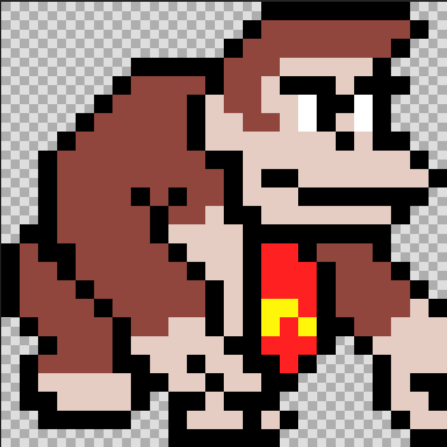
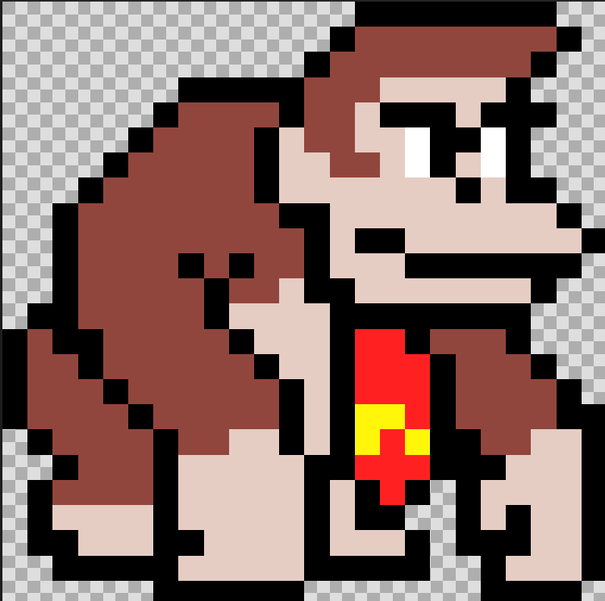

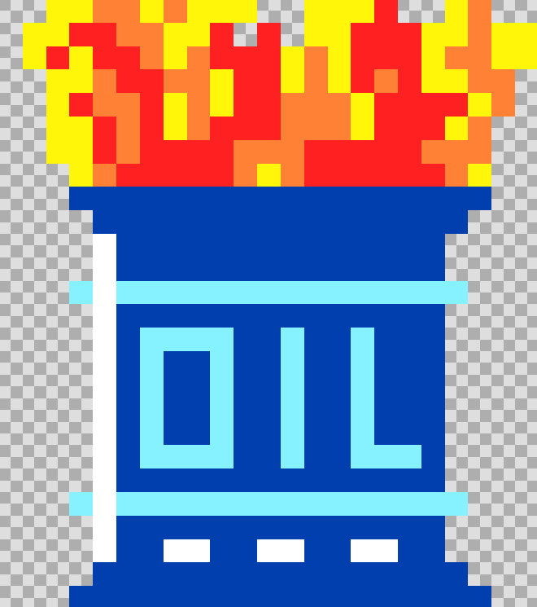

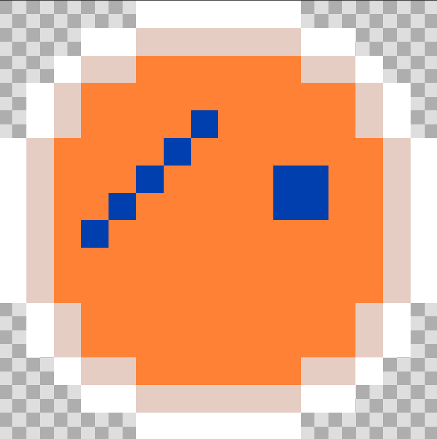
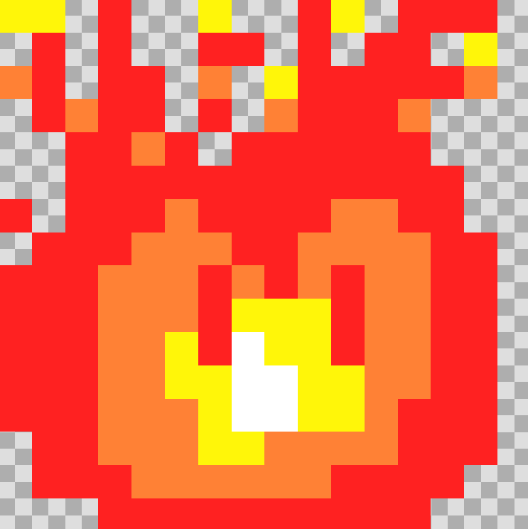
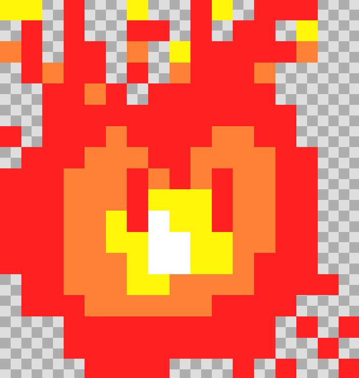


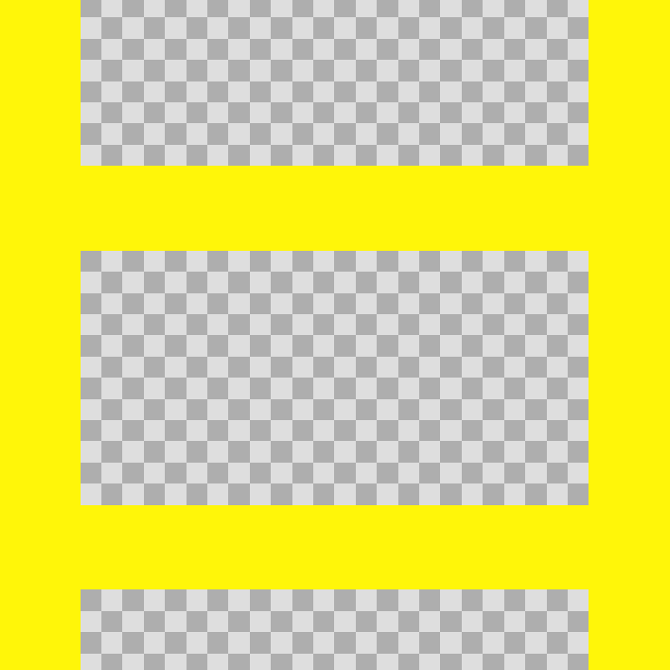
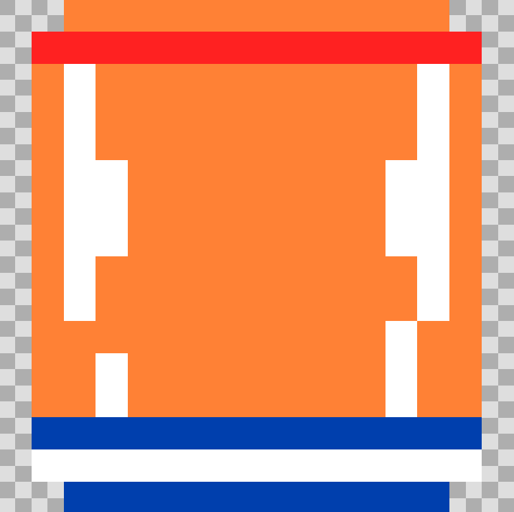

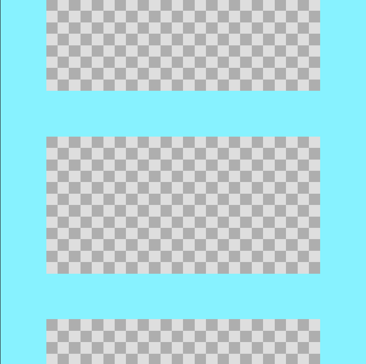
| Pertsonaia eta objetuen deskribapena |
| Itzuli atzera |
Hemen Pertsonaien eta objetuen deskribapen txiki bat ikusiko duzu.
| Mario | Hau pertsonai nagusia da, balak jaurtitzeko ahalmena du, txikia eta pixkabat loditxo dago. |
  |
|---|---|---|
| Donkey Kong | Jokoaren etsai nagusia da, oso haundia da eta beltza, dorrearen goiko aldean dago eta barrilak botatzen ditu Mario geldiarazteko. Gainera, printzesa arrapatuta dauka. |
  |
| Printzesa | Printzesa argala eta ile horia da, Donkey Kongen eskuetan dagoen pertsonaia da. Bere funtzioa jokoaren helburua da, hau da, Mario printzesa erreskatatzera iritsi behar da. |
|
| Kupea Suarekin | Hemendik sua etsaiak ateratzen dira eta Mario kupe hau ikutzerakoan bizitza bat gutxiago eukiko du. |
 |
| Bizitza | Printzesaren alboan dago bizitza, Mario ikutzen duen unean bizitza 1+ eukiko du. |
|
| Kupea | Kupea goitik behera egiten du, Donkey Kupeak botatzen ditu 6 segundoro. |
 |
| Sua | Sua 1 eta 2 mapan daude, Mario ikutzen badu bizitz 1- gutxiago eukiko du. |
  |
| Projectile | Bigarren mapan dago, Mario ikutzen duenean proijektileak bota ahalko ditu x ardatzan. |
|
| Blokea 1 | Solairu disenatutako bloke bat da 1 mapan. |
|
| Eskailera 1 | Eskailera disenatutako bloke bat da 1 mapan. |
 |
| Kupea geldirik | 4 Kupea daude lehenengo mapan, Donkey hortik hartzen ditu eta ez dira bukatzen |
 |
| Blokea 2 | Solairu disenatutako bloke bat da 2 mapan. |
|
| Eskailera 2 | Eskailera disenatutako bloke bat da 2 mapan. |
 |
| Postea | Postea 2 mapan dago, honi esker Printzesa dagoen solairuan ezin da kolapsatu. | |
| Bloke bereziak | Honi esker, kupeak eta suak eskerreruntz edo eskuineruntz ahal dira mugitu. |